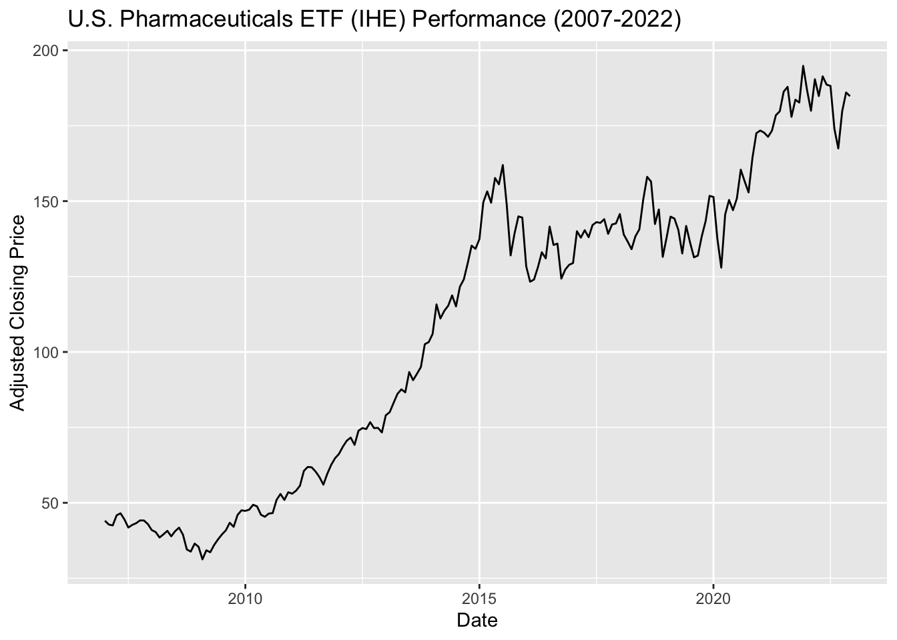

Code
library(tidyverse)
library(tidyquant)
library(ggplot2)
library(forecast)
library(astsa)
library(xts)
library(tseries)
library(lubridate)
library(plotly)
library(kableExtra)
library(dplyr)For the financial time series modeling section of this project, I am once again going to take a look at the iShares U.S. Pharmaceuticals ETF (IHE) stock, focusing in on monthly performance.
More specifically, I am going to be modeling and forecasting the volatility of future returns.
library(tidyverse)
library(tidyquant)
library(ggplot2)
library(forecast)
library(astsa)
library(xts)
library(tseries)
library(lubridate)
library(plotly)
library(kableExtra)
library(dplyr)Just by looking at the time series plot for the adjusted closing prices below, we can see that the data is not stationary.
pharma = read.csv("datasets/IHE.csv")
pharma.ts = subset(pharma, select = Adj.Close)
pharma.ts = ts(pharma.ts, start=c(2007,1),frequency = 12)
autoplot(pharma.ts, main = "U.S. Pharmaceuticals ETF (IHE) Performance (2007-2022)", xlab = "Date", ylab = "Adjusted Closing Price")
Next, we need to look at the returns of the ETF to see if there are any standout points of volatility. To do this, I will take the log and first difference of the time series.
As can be seen below, there appear to be some points of high volatility, particularly 2007-2008, 2016, 2018, and 2020.
returns = log(pharma.ts) %>% diff()
autoplot(returns) + ggtitle("IHE ETF Returns")To determine if this is now stationary, we can look at the ACF and PACF plots for these returns.
Based on the results of below, I will conclude that the returns are at least weakly stationary.
par(mar=c(5,4,3,2)+0.1)
acf(returns)par(mar=c(5,4,3,2)+0.1)
pacf(returns)We can also see the results of the ACF and PACF for the absolute values of the returns and the squared values of the returns below.
Looking at the results, there appears to be some correlation between the plots, as the results follow the same pattern for the absolute value of the returns and the squared value of the returns.
Absolute Value
par(mar=c(5,4,3,2)+0.1)
acf(abs(returns))pacf(abs(returns))Squared
par(mar=c(5,4,3,2)+0.1)
acf(returns^2)pacf(returns^2)By looking at the PACF of the squared returns seen above, the p parameter for the ARCH(p) model can be found. Based on the results above, it seems like p = 4 is the best option.
I will fit the following ARCH(p) model with p = 4 below:
library(fGarch)
arch.fit1 = garchFit(~garch(4,0), data = returns, trace = F)
summary(arch.fit1)
Title:
GARCH Modelling
Call:
garchFit(formula = ~garch(4, 0), data = returns, trace = F)
Mean and Variance Equation:
data ~ garch(4, 0)
<environment: 0x7f9f9dc65c00>
[data = returns]
Conditional Distribution:
norm
Coefficient(s):
mu omega alpha1 alpha2 alpha3 alpha4
0.00870722 0.00151265 0.08691502 0.04425317 0.00000001 0.14111223
Std. Errors:
based on Hessian
Error Analysis:
Estimate Std. Error t value Pr(>|t|)
mu 8.707e-03 4.603e-03 1.892 0.058553 .
omega 1.513e-03 4.327e-04 3.496 0.000473 ***
alpha1 8.692e-02 8.422e-02 1.032 0.302100
alpha2 4.425e-02 6.903e-02 0.641 0.521487
alpha3 1.000e-08 1.785e-01 0.000 1.000000
alpha4 1.411e-01 1.052e-01 1.342 0.179702
---
Signif. codes: 0 '***' 0.001 '**' 0.01 '*' 0.05 '.' 0.1 ' ' 1
Log Likelihood:
321.1274 normalized: 1.681295
Description:
Sun Apr 16 16:43:49 2023 by user:
Standardised Residuals Tests:
Statistic p-Value
Jarque-Bera Test R Chi^2 4.998205 0.08215869
Shapiro-Wilk Test R W 0.9853004 0.04357341
Ljung-Box Test R Q(10) 9.035682 0.5287206
Ljung-Box Test R Q(15) 13.19662 0.5871138
Ljung-Box Test R Q(20) 17.01757 0.6518322
Ljung-Box Test R^2 Q(10) 3.046779 0.9803016
Ljung-Box Test R^2 Q(15) 6.201305 0.9761642
Ljung-Box Test R^2 Q(20) 7.011966 0.9966456
LM Arch Test R TR^2 4.422239 0.9745574
Information Criterion Statistics:
AIC BIC SIC HQIC
-3.299763 -3.197597 -3.301658 -3.258381 Looking at the results above, we can see that none of the alpha coefficients are significant. To see if this changes when we reduce the p parameter, I will perform the following ARCH(p) model where p = 1.
arch.fit2 = garchFit(~garch(1,0), data = returns, trace = F)
summary(arch.fit2)
Title:
GARCH Modelling
Call:
garchFit(formula = ~garch(1, 0), data = returns, trace = F)
Mean and Variance Equation:
data ~ garch(1, 0)
<environment: 0x7f9f9fc5d078>
[data = returns]
Conditional Distribution:
norm
Coefficient(s):
mu omega alpha1
0.0085855 0.0019442 0.0774377
Std. Errors:
based on Hessian
Error Analysis:
Estimate Std. Error t value Pr(>|t|)
mu 0.0085855 0.0034238 2.508 0.0122 *
omega 0.0019442 0.0002524 7.703 1.33e-14 ***
alpha1 0.0774377 0.0861516 0.899 0.3687
---
Signif. codes: 0 '***' 0.001 '**' 0.01 '*' 0.05 '.' 0.1 ' ' 1
Log Likelihood:
318.0369 normalized: 1.665115
Description:
Sun Apr 16 16:43:49 2023 by user:
Standardised Residuals Tests:
Statistic p-Value
Jarque-Bera Test R Chi^2 9.443763 0.00889842
Shapiro-Wilk Test R W 0.9791644 0.00601258
Ljung-Box Test R Q(10) 9.829968 0.4555354
Ljung-Box Test R Q(15) 14.64483 0.4772903
Ljung-Box Test R Q(20) 17.70044 0.6071347
Ljung-Box Test R^2 Q(10) 11.58238 0.3139775
Ljung-Box Test R^2 Q(15) 14.74208 0.4701501
Ljung-Box Test R^2 Q(20) 15.81066 0.728299
LM Arch Test R TR^2 13.6605 0.3229117
Information Criterion Statistics:
AIC BIC SIC HQIC
-3.298816 -3.247733 -3.299299 -3.278125 Once again, we see that the alpha coefficient is not significant.
Because of this, I want to check for the presence of ARCH effects using a function called ArchTest(). If the null hypothesis can be rejected at the \(\alpha = 0.05\) level, we can conclude that ARCH effects are present in the returns. If the null hypothesis cannot be rejected, then we will conclude that we cannot prove that ARCH effects are present in the returns.
When lag = 1, we can see below that ARCH effects are not present.
library(FinTS)
ArchTest(returns, lags = 1, demean=TRUE)
ARCH LM-test; Null hypothesis: no ARCH effects
data: returns
Chi-squared = 0.92716, df = 1, p-value = 0.3356However, when lag = 4, as was tested in the first ARCH model, we can reject the null hypothesis and conclude that ARCH(4) effects are present.
ArchTest(returns, lags = 4, demean=TRUE)
ARCH LM-test; Null hypothesis: no ARCH effects
data: returns
Chi-squared = 11.511, df = 4, p-value = 0.02138Because I was able to conclude the presence of ARCH(4) effects in the returns, but believe the model can be improved, I am going to attempt to use GARCH(p,q) modeling to improve potential volatility forecasting ability.
As a refresher, the ACF and PACF for the squared returns can be seen below.
par(mar=c(5,4,3,2)+0.1)
acf(returns^2)
pacf(returns^2)
Based on the results above, I believe that the ideal GARCH model will contain a p parameter between 1 and 4 and a q parameter between 1 and 5.
To find the model with the lowest AIC error, I am going to create a for loop that will create a model for each of these options and extract the AIC values for each.
garch.model = list()
count = 1
for (p in 1:4){
for (q in 1:5){
garch.model[[count]] = garch(returns, order = c(q,p), trace=F)
count = count + 1
}
}Below, we can see which model of the options has the lowest AIC.
garch.aic <- sapply(garch.model, AIC)
which(garch.aic == min(garch.aic))[1] 1garch.model[[which(garch.aic == min(garch.aic))]]
Call:
garch(x = returns, order = c(q, p), trace = F)
Coefficient(s):
a0 a1 b1
0.0004144 0.0633629 0.7462961 Based on the results above, it seems that the best model is GARCH(1,1). The summary of the model is seen below.
summary(garchFit(~garch(1,1), returns,trace = F))
Title:
GARCH Modelling
Call:
garchFit(formula = ~garch(1, 1), data = returns, trace = F)
Mean and Variance Equation:
data ~ garch(1, 1)
<environment: 0x7f9fae6adc40>
[data = returns]
Conditional Distribution:
norm
Coefficient(s):
mu omega alpha1 beta1
0.00829685 0.00042924 0.08473391 0.71262945
Std. Errors:
based on Hessian
Error Analysis:
Estimate Std. Error t value Pr(>|t|)
mu 0.0082968 0.0032441 2.558 0.0105 *
omega 0.0004292 0.0003078 1.394 0.1632
alpha1 0.0847339 0.0604676 1.401 0.1611
beta1 0.7126294 0.1639708 4.346 1.39e-05 ***
---
Signif. codes: 0 '***' 0.001 '**' 0.01 '*' 0.05 '.' 0.1 ' ' 1
Log Likelihood:
319.037 normalized: 1.670351
Description:
Sun Apr 16 16:43:49 2023 by user:
Standardised Residuals Tests:
Statistic p-Value
Jarque-Bera Test R Chi^2 7.324156 0.0256791
Shapiro-Wilk Test R W 0.9818034 0.01388456
Ljung-Box Test R Q(10) 9.420146 0.4927475
Ljung-Box Test R Q(15) 14.0024 0.5253469
Ljung-Box Test R Q(20) 17.4479 0.6237275
Ljung-Box Test R^2 Q(10) 8.161003 0.6131138
Ljung-Box Test R^2 Q(15) 11.31451 0.729997
Ljung-Box Test R^2 Q(20) 12.56305 0.8953354
LM Arch Test R TR^2 11.08292 0.5218259
Information Criterion Statistics:
AIC BIC SIC HQIC
-3.298816 -3.230706 -3.299670 -3.271228 The results of the Ljung-Box test above prove the validity of the GARCH(1,1) in capturing all residual autocorrelation. For the Ljung-Box test, an inability to reject the null hypothesis means that the GARCH model is capturing autocorrelation. Because each test above has a high p-value, we can conclude that the model is a great fit.
I will plot the residuals to add further evidence to this. Looking at the standardized residuals plot, it does not seem like further modeling is needed. The residuals a appear stationary, and there does not appear to be any especially high points of volatility.
best.garch = garch(returns, order = c(1,1), trace = F)
checkresiduals(best.garch)The resulting equation for the chosen GARCH(1,1) model is:
\(\sigma_t^2 = \alpha_0 + \alpha_1r^2_{t-1} + \beta_1\sigma^2_{t-1}\)
Adding in the coefficients from the model summary:
\(\sigma_t^2 = \alpha_0 + 0.0847339r^2_{t-1} + 0.7126294\sigma^2_{t-1}\)
The prediction for the next 12 months can be seen below.
best.fit = garchFit(~garch(1,1), returns)
Series Initialization:
ARMA Model: arma
Formula Mean: ~ arma(0, 0)
GARCH Model: garch
Formula Variance: ~ garch(1, 1)
ARMA Order: 0 0
Max ARMA Order: 0
GARCH Order: 1 1
Max GARCH Order: 1
Maximum Order: 1
Conditional Dist: norm
h.start: 2
llh.start: 1
Length of Series: 191
Recursion Init: mci
Series Scale: 0.04602458
Parameter Initialization:
Initial Parameters: $params
Limits of Transformations: $U, $V
Which Parameters are Fixed? $includes
Parameter Matrix:
U V params includes
mu -1.63103514 1.631035 0.1631035 TRUE
omega 0.00000100 100.000000 0.1000000 TRUE
alpha1 0.00000001 1.000000 0.1000000 TRUE
gamma1 -0.99999999 1.000000 0.1000000 FALSE
beta1 0.00000001 1.000000 0.8000000 TRUE
delta 0.00000000 2.000000 2.0000000 FALSE
skew 0.10000000 10.000000 1.0000000 FALSE
shape 1.00000000 10.000000 4.0000000 FALSE
Index List of Parameters to be Optimized:
mu omega alpha1 beta1
1 2 3 5
Persistence: 0.9
--- START OF TRACE ---
Selected Algorithm: nlminb
R coded nlminb Solver:
0: 269.61850: 0.163104 0.100000 0.100000 0.800000
1: 269.58402: 0.163139 0.109132 0.100061 0.803616
2: 269.40631: 0.163189 0.110872 0.0919758 0.798322
3: 269.27606: 0.163337 0.127982 0.0823988 0.797438
4: 269.22356: 0.163600 0.135195 0.0701563 0.785913
5: 269.09624: 0.163988 0.147860 0.0779185 0.775376
6: 269.06291: 0.164765 0.156331 0.0815851 0.760229
7: 269.05620: 0.168963 0.175447 0.0636855 0.759221
8: 269.04059: 0.169023 0.175086 0.0702427 0.757334
9: 269.02482: 0.170008 0.174574 0.0699032 0.754177
10: 269.01231: 0.172045 0.177491 0.0728763 0.750431
11: 268.98397: 0.181355 0.196021 0.0759531 0.727537
12: 268.98087: 0.172227 0.212380 0.0856661 0.702202
13: 268.97451: 0.182344 0.199154 0.0882391 0.712553
14: 268.97187: 0.180479 0.202857 0.0839659 0.713197
15: 268.97176: 0.180231 0.202767 0.0847747 0.712471
16: 268.97176: 0.180275 0.202641 0.0847367 0.712627
17: 268.97176: 0.180270 0.202640 0.0847339 0.712629
Final Estimate of the Negative LLH:
LLH: -319.037 norm LLH: -1.670351
mu omega alpha1 beta1
0.0082968497 0.0004292444 0.0847339067 0.7126294461
R-optimhess Difference Approximated Hessian Matrix:
mu omega alpha1 beta1
mu -96446.8877 -79469.33 413.9706 -213.9205
omega -79469.3321 -278623038.85 -469038.0603 -568530.7466
alpha1 413.9706 -469038.06 -1138.2774 -1014.9817
beta1 -213.9205 -568530.75 -1014.9817 -1207.1117
attr(,"time")
Time difference of 0.003479958 secs
--- END OF TRACE ---
Time to Estimate Parameters:
Time difference of 0.01336694 secspredict(best.fit , n.ahead = 12, trace = FALSE, plot=TRUE)
meanForecast meanError standardDeviation lowerInterval upperInterval
1 0.00829685 0.04474059 0.04474059 -0.07939310 0.09598680
2 0.00829685 0.04500381 0.04500381 -0.07990900 0.09650270
3 0.00829685 0.04521260 0.04521260 -0.08031821 0.09691191
4 0.00829685 0.04537838 0.04537838 -0.08064315 0.09723685
5 0.00829685 0.04551014 0.04551014 -0.08090139 0.09749509
6 0.00829685 0.04561493 0.04561493 -0.08110678 0.09770047
7 0.00829685 0.04569831 0.04569831 -0.08127020 0.09786390
8 0.00829685 0.04576469 0.04576469 -0.08140030 0.09799400
9 0.00829685 0.04581755 0.04581755 -0.08150390 0.09809760
10 0.00829685 0.04585965 0.04585965 -0.08158642 0.09818012
11 0.00829685 0.04589320 0.04589320 -0.08165216 0.09824586
12 0.00829685 0.04591993 0.04591993 -0.08170455 0.09829825